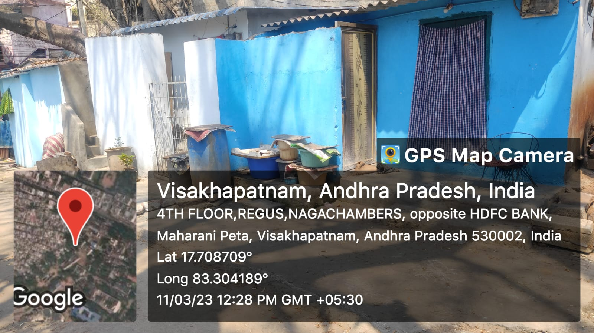

maharanipeta

Maharanipeta is a slum settlement located in the Greater Visakhapatnam Municipal Corporation (GVMC) area of Visakhapatnam, a city in the state of Andhra Pradesh, India. The settlement is characterized by a lack of basic amenities such as proper sanitation, clean water supply, and adequate housing. The residents of the slum are mostly from low-income families who work in nearby factories or as daily wage laborers
- Health Risks: Due to the lack of proper sanitation and clean water supply, the residents of the slum are at risk of contracting various waterborne and airborne diseases. The absence of proper waste management facilities can also lead to the spread of diseases.
- Education: The children in the slum often do not have access to education due to the lack of schools or educational facilities in the area. This can limit their opportunities in life and perpetuate the cycle of poverty.
- Inadequate Infrastructure: The slum lacks adequate infrastructure such as roads, drainage, and street lighting. This makes the slum more vulnerable to natural disasters and other risks.